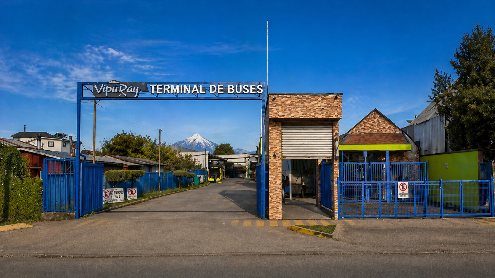
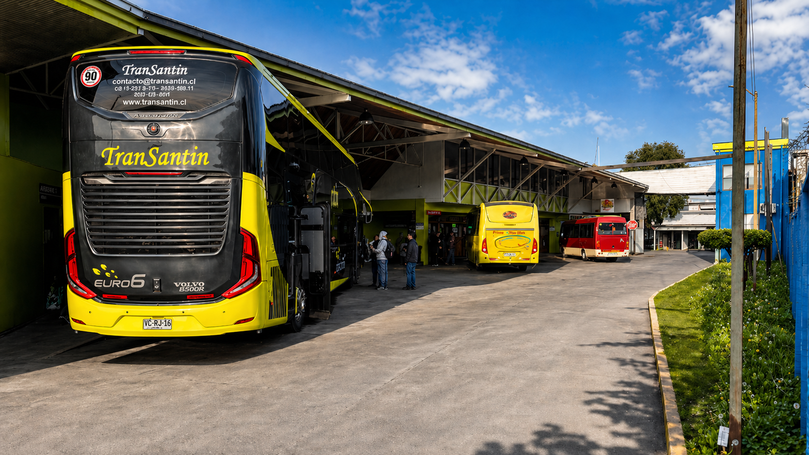
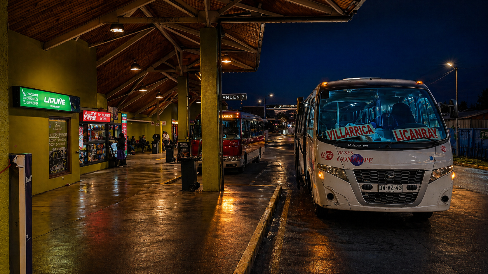
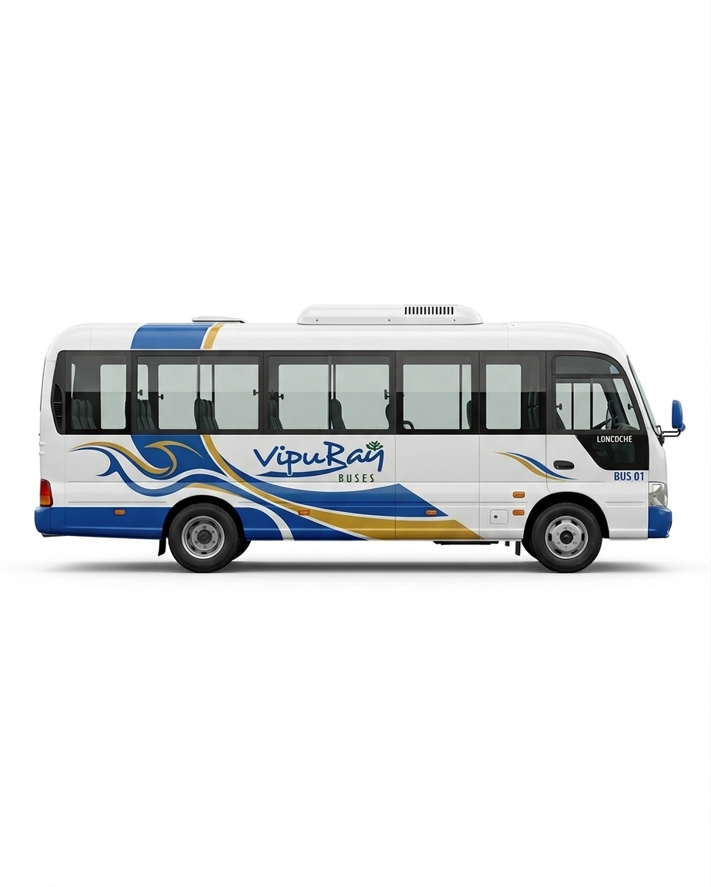

Conectamos Villarrica con el Centro y Sur de Chile
Buses Vipu-Ray, más de 20 años uniendo personas y destinos con seguridad, comodidad y confianza.
Salidas todos los días
Flota moderna
Atención personalizada
Información clara
¿Qué empresa deseas consultar?
Información de la empresa
Horarios, destinos y boletería
Empresas y Destinos Principales
Desde Villarrica
Terminal de Buses Villarrica
Sobre Vipu-Ray
Somos un punto de conexión para pasajeros, empresas y encomiendas. Integramos boleterías, atención presencial, flota cómoda y canales digitales para planificar tu viaje con claridad.



Nuestra flota
Viajes cómodos, seguros y conectados
Buses equipados
Asientos reclinables
Climatización
WiFi seleccionado
Viaje seguro

¿Listo para tu próximo viaje?
Revisa horarios referenciales y confirma salidas directamente con boletería, correo o Instagram.
Preguntas frecuentes
Información útil para viajar desde Villarrica
Terminal de Buses Vipu-Ray
Atención presencial y digital
Información clara antes de viajar
01
¿Dónde está ubicado el Terminal de Buses Vipu-Ray?
Estamos en Anfión Muñoz 745, Villarrica, Chile, con atención presencial para pasajeros y consultas de boletería.
02
¿Cómo consultar horarios de buses desde Villarrica?
Selecciona una empresa en el buscador para revisar sus destinos, horarios o frecuencia informada, servicios y boletería correspondiente.
03
¿Qué empresas operan en el terminal?
Operan Buses Vipu Ray, Coñaripe, Villarrica, Transantin, Pullman Tur, Oro Verde, Lista Azul, Barahona y servicios rurales.
04
¿La página vende pasajes online?
Por ahora la página entrega información de empresas, destinos, horarios referenciales y boleterías. La compra o confirmación se realiza con la empresa correspondiente.
Contacto
Háblanos de tu viaje
Usa el formulario para enviar tu solicitud. Si prefieres escribirnos por redes, entra directamente a nuestro Instagram oficial.